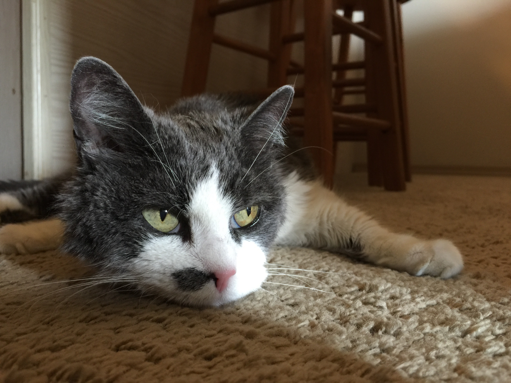

Frodo's Webpage
A site dedicated to Frodo Beans Sparks-Hench, the cat
Some of Frodo's favorite pastimes include:
- Grooming herself
- Being curious
- Helping in the kitchen
- Gazing out the window
- Getting high on catnip
- Showing everyone her jellybeans

In the Fall of 2009 Frodo "welcomed" a younger sister, Walla.
Dinnertime was never the same again
Much time was spent trying to avoid Walla
Through thick and thin, Frodo has always been my buddy.
Thanks for reading about Frodo
